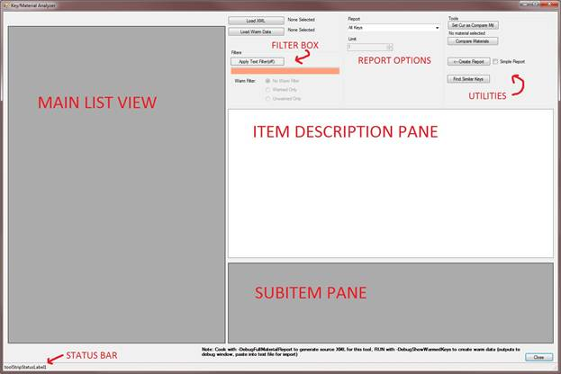
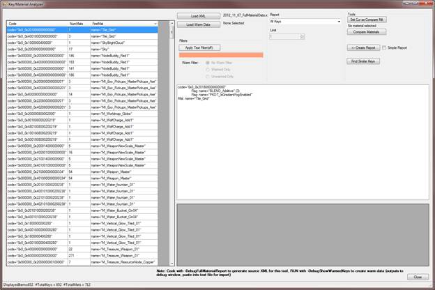
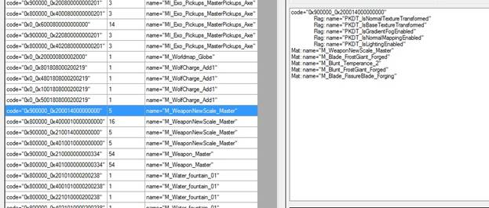
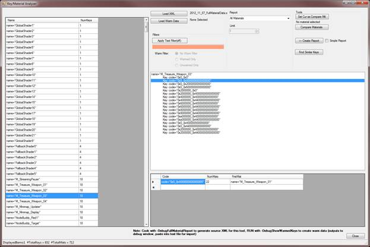

UDN
Search public documentation:
MobileShaderAnalyzerCH
English Translation
한국어
Interested in the Unreal Engine?
Visit the Unreal Technology site.
Looking for jobs and company info?
Check out the Epic games site.
Questions about support via UDN?
Contact the UDN Staff
한국어
Interested in the Unreal Engine?
Visit the Unreal Technology site.
Looking for jobs and company info?
Check out the Epic games site.
Questions about support via UDN?
Contact the UDN Staff
移动设备着色器分析器
文档概要： 介绍了移动设备着色器分析器工具，该工具用于访问移动设备开发的shader keys（着色器关键码）创建信息，并辅助指示如何减少着色器关键码。 文档变更记录: 初始版本。概述
Mobile Shader Analyzer (MSA)（移动设备着色器分析器）是用于检查针对应用程序烘焙的移动设备着色器及材质的工具。通过各种报告方式，该工具可以辅助减少所创建的keys（关键码）的数量，从而可以帮助改进应用程序加载时间性能(着色器关键码的编译及准备过程会大大地影响iOS加载时间)。准备数据
主要数据
要想创建该应用程序的测试数据，您必须在UFE工具中使用命令行开关“-DebugFullMaterialReport”烘焙您的地图。注意，为了使该工具正常工作，您必须进行完全的重新编译(“-full”，或者删除您的Cookedxxx 文件夹中的内容)。增量烘焙将会加载缓存的着色器关键码，从而导致所有缓存的关键码包含错误数据或者空的材质字符串。一般，此时您要烘焙所有的游戏内容，否则 材质/着色器 可能会丢失。 一旦烘焙完游戏内容后，您应该在您的预先准备数据
有些时候，您或许也想知道在您的应用程序各部分执行过程中预先准备了哪些着色器。要想获得该数据，请使用“-DebugShowWarmedKeys”命令行选项在设备上运行应用程序。应用程序将会输出关键码预先准备信息到调试器的调试输出流中，或者如果您正在运行一个调试版的可执行文件则输出到Unreal Console中。您需要将应用程序的调试输出保存为一个文本文件（如果您可以获得所有输出，而不仅仅是预先准备信息），并将其保存到您的PC主机上。 注意： 由于该功能的实现问题，该功能目前仅供可以创建调试版本可执行文件进行测试的授权用户使用。启动工具
在您的UE3/UDK Binaries文件夹中运行MobileShaderAnalyzer.exe。 一旦启动，您应该看到如下的应用程序(图片1)- 图片1 - 主要应用程序:

应用程序区域
主列表视图
该区域列出了基于当前Report Options（报告选项）和Filter(过滤器)的所有条目(着色器关键码和材质)。条目描述面板
显示了主列表视图中当前选中条目的详细信息。子条目面板
显示了关于条目描述面板中当前选中项的一些附加信息。状态条
显示了类似于主列表视图中当前列出的条目数量这样的信息。过滤器选框
允许输入过滤关键字并将其应用到主列表视图中的数据上。报告选项
控制主列表视图中显示的数据组合工具
用于检查、比较或导出结果的各种工具一般应用
加载您的数据
点击‘Load XML(加载XML)’按钮，并浏览到您生成的XML数据文件。 这将把所有 关键码/材质 数据加载到应用程序中，并显示默认视图(所有关键码)，如下所示(图片2)- 图片2 - 默认应用程序视图:

改变显示的数据
您可以在工具的Report Options（报告选项）部分使用下拉框来改变主列表中显示的数据。选项是:- All Keys(所有关键码) – 显示针对应用程序生成的所有关键码
- All Materials(所有材质) – 显示针对应用程序生成的所有材质
- Keys from few (use limit) materials（来自少数几个（有限）材质的关键码） – 该视图显示仅从X个材质创建的所有关键码，默认是1个材质。X值可以通过主报告下拉菜单的Limit方框中设置。在尝试减少着色器关键码数量时这是其中一个比较有用的视图，正如在‘Optimizing Materials（优化材质）’部分所描述的。
- Materials creating unique (use limit) keys（创建唯一（有限）关键码的材质） – 和上面的选项类似，该项将显示创建仅来自X个材质的关键码的所有材质。再次说明，您可以使用Limit方框修改数量。请参照‘Optimizing Materials(优化材质)’部分获得关于该视图的所有细节。
Filtering（过滤）
您也可以在任何Report(报告)模式下在主列表视图中过滤所有结果。过滤是基于纯文本进行的，使用材质名称字符串和关键码中的Code Flag（编码标志）名称。 该过滤框可以接受多个参数，参数之间通过分号分隔。您可以通过在您的搜索项的前面使用 “!”前缀来应用‘inverse（反向选择）’过滤器(过滤出不包含搜索项的内容)。所有搜索是区分大小写的。 比如，仅想基于低端着色器项来筛选视图且没有其他混合，你可以输入：lowend,!BLEND_additive
无论用于筛选的文本是否存在，都可以通过 ‘Apply Text Filter(应用文本过滤器)’按钮来切换筛选过滤功能的开关状态。 该按钮文本将反映当前的过滤筛选状态(打开/关闭)，搜索文本的背景颜色也可以反映过滤筛选的状态(绿色=启用筛选功能，橘黄色=禁用筛选功能)。
如果您已经生成了预先准备数据(请参照预先准备数据)，那么您也可以使用那个数据进行过滤。请选择 ‘Load Warm Data(加载预先准备数据)’并从您的设备中浏览到生成的输出文本文件。 当主列表视图中正在显示关键码时，那么已经预先准备的所有关键码将会高亮显示为绿色。在Filter（过滤器）区域，您可以使用Warm Filte按钮轻松地将这些内容进行筛选或者取消筛选。
检查数据
简述 – Shader Keys（着色器关键码）
在移动设备处理过程中，所有着色器使用基于材质设置的各个部分组合而成。一个材质一般将创建很多着色器关键码，引擎会根据通用规则及用户选择的材质设置对其中很多设置进行重复处理。比如，如果一个材质标记为同植皮顶点结合使用，那么引擎不知道该材质是否会应用到未植皮的网格物体上，所以将会创建该着色器的两个版本。将针对正常渲染过程和引擎渲染过程创建该着色器的不同版本。随着足够多的这些迭代设置不断地彼此重复堆叠，产生的组合数量将会不断增大。这可能导致一个单独的材质生成很多着色器。 每个着色器的所有设置在该着色器的最终签名中都会比赋予一个单独的位，在本工具中所指的就是着色器的Code String(该值是每个着色器真正的唯一着色器关键码)。如果一个着色器关键码和一个已经创建的关键码一样，那么该着色器就不是唯一的并将仅创建一次。 请参照MobileMaterialReference获得关于Shader Keys（着色器关键码）和Mobile Materials(移动设备材质)的信息。Key View（关键码视图）
如果你正在使用在Main List View(主列表视图)中列出着色器关键码的Report(报告)模式，那么您将看到关键码列表显示为3列： Code String（编码字符串）、Number of Materials (NumMats)（材质数量）和共同生成该关键码的位于材质列表中的第一个材质(FirstMat)。在工具中，可以点击所有列表来进行分类。 通常，知道第一个材质的编码字符串不是那么有用。要想知道关于任何关键码的更多详细信息，请在主列表视图中选中它，查看Item Description Pane(条目描述面面板)中关于选中关键码的更加详细的信息 （请参见图片3）。- 图片 3 - 条目描述面板中的详细信息:

- 图片4 - 在子条目显示中显示额外的材质信息:

材质视图
如果你正在使用在Main List View(主列表视图)中列出材质的Report(报告)模式，那么您将看到所有材质的列表显示为2列： 名称和该材质生成的关键码数量 (NumKeys)，如图5所示。和关键码视图一样，所有列都是可以分类的。 从主列表视图中选中一个材质将会在条目描述面板显示关于该材质的详细信息，也就是该材质创建的所有着色器关键码的列表。选中条目描述面板中的任何关键码将在子条目面板中填充关于该关键码的附加信息。创建该关键码的材质数量，和第一个列出的材质等。- 图片5 - 显示材质:

工具
在进行分析过程中，有几个有用的工具可以起到辅助作用：Create Report（创建报告）
点击这个按钮将会提示您在您的系统上创建并保存一个新的文本文件。该文本文件包含了主列表视图中的当前内容，包括任何筛选信息。根据您的报告模式不同，这将是关键码列表、关键码数据或材质。如果您选择‘Simple Report(简单报告)’复选框，那么任何材质报告将仅包含所显示的材质的名称，如果您正在将材质列表传给另一个人看，那么这样可以使得最终的文本文件更容易分析。Find Similar Keys（查找类似的关键码）
如果主列表视图正在显示关键码，选中其中一个关键码并选择‘Find Similar Keys(查找类似的关键码)’按钮，将会查找所有已加载关键码来查找和选中项最接近的关键码。 ‘接近’是指仅多1个设置、少一个设置、或者同时进行这两个处理(打开一点某个功能,禁用一点某个功能或者同时进行这两个操作）。报告窗口将会弹出，显示了所有符合这个标准的关键码(请参照图片6)。在这个视图中，您将看到类似关键码的列表，及每个关键码需要修改哪些内容来使它们匹配，需要删除的功能标记为红色，需要添加的功能标记为绿色。- 图片6 - 查找相似关键码的报告:

材质比较
有时候，您会想比较两个材质看它们是否一样。比如，如果您有两个都生成了40个关键码的材质，您可能想知道它们是否具有完全一样的40个关键码还是在某些形式上有所不同。要想进行判断，在主视图列表中选择你的第一个材质(必须在显示材质报告模式中)并点击‘Set Cur as Compare Mtl(将当前选中项作为比较材质)’。然后选择您的第二个材质，并点击‘Compare Materials(比较材质)’。您将看到类似于图7的弹出框。这个框将显示两个材质间有多少个关键码是相似的，并显示是什么使它们相似的（“相似”的意思和上面查找相似关键报告中意思是一样的）具体细节。- 图片7 - 材质比较结果:

优化着色器数量
这部分将详细介绍使用该工具辅助降低您的游戏中的整体着色器应用数量的某些基本工作流程，及在开发您的应用程序中要考虑的一般的内容创建注意事项。降低您的着色器数量将加快应用程序加载速度。着色器数量降低后，也可以确保您编译的着色器可以适合放入到您的应用程序的着色器缓存(iOS)中，加快第二次引导时间，直到您的应用程序完全从程序中退出为止。最快的、数量最少的着色器: 这是不存在的
在您的应用程序开始尝试最重要的一件事是尽可能地使用Master Materials(主材质) 和Material Instance Constants（材质实例常量）。当使用继承于主材质的子材质时，产生的迭代关键码非常少，所以您的材质将创建很多关键码，但是所有这些材质将映射到同样的一组关键码上。平衡： 性能VS加载时间
另一个涉及到性能和着色器数量平衡的内容创建技巧(该技巧通常是应用Master Materials(主要材质)要考虑的事项)。如果您具有两个本质上非常接近的着色器关键码，您可以在这两个关键码中‘较小’的那个上面启用缺失的功能，并在可能的情况下给那个设置传入一个默认贴图/值。比如，如果一个关键码使用网格物体颜色值，另一个关键码和它是类似的，但没有网格物体颜色值，那么您可以在第一个材质上启用网格物体颜色值，进传入 白色/白色贴图 /等做为设置值。这将添加给您的着色器添加变化的 复杂度/宽度 相关信息，所以必须考虑这种情况以确保您可以承担带来的性能消耗。这个关键码融合可能很慢，是一个资源一个资源地执行的，所以再次强调使用Master Materisals从本质上基本执行同样的处理，并且我们倾向于使用Master Materials这种方法。查找唯一关键码
在您的游戏中首先要检查的事情之一是‘唯一’关键码，也就是来自于非常少量材质的关键码。这意味着在那个材质中有应用程序中其他材质不使用的某种功能或者某些功能。如果可以消除这种唯一性，或者像上面提到的那样将这些唯一关键码和其他关键码融合，那么就可以降低关键码的总数。 要想进行这个检查，请使用 ‘Keys from few (use limit) Materials(来自少量(有限)材质的关键码)’报告模式，并相应地设置限制值(最好从1开始)。 通常，在每个关键码的Item Description View(条目描述视图)中就可以清楚地看出导致 关键码/着色器 如此唯一的原因。这里‘Find Similar Keys(查找相似关键码)’功能也是有辅助作用的。 您也可以使用‘Materials creating unique (use limit) keys(创建唯一关键码)’报告模式在这里列出符合条件的材质，然后导出材质列表以供其他人检查。检查过度迭代的关键码
选择 ‘All Materials(所有材质)’ 报告模式，然后按每个材质的关键码的数量降序排列。通常，创建大量关键码的材质都是使用Master materials(主材质)的，这一般是个好事。您可以使用Compare Material (比较材质)功能来比较生成了相同数量关键码的两个材质来判断它们是否完全一样，以确保它们确实使用了Master Materials。但是，有些时候，创建大量关键码的材质指出了选择了太多重复位的问题，通常是意外产生的，或者没有人知道它们正创建如此多的关键码。如果一个创建了大量关键码的材质没有使用Master Materials，或者没有和其他材质共享这些关键码，您想知道为什么会这样。 那么请返回到‘All Keys(所有关键码)’视图模式，然后过滤出有问题的材质名称。这将显示那个材质创建的所有关键码。通过选择每个关键码，您可以或者可视化地检查使得该关键码唯一的原因，或者使用Find Similar Materials(查找类似材质)来看一下这些关键码和其另外类似材质有何不同。通常，这将揭示出材质中的很多迭代设置正在强制关键码产生组合式爆炸性增长，这通常是可以消除的。一些常见示例：- 植皮. 如果您看到具有皮肤和没有皮肤的着色器的两个版本，并且您知道将要总是在植皮的网格物体上使用它们，那么您可以将该材质添加到您的应用程序的!DefaultEngine.ini文件下的!MobileMaterialCookSettings部分中。在该部分添加一行 ‘+SkinningOnlyMaterials=
’。在烘焙过程中将仅创建该着色器带皮肤的版本，将立即将该材质所创建的关键码数量减少一半。示例：
[MobileMaterialCookSettings] +SkinningOnlyMaterials=M_FireChest +SkinningOnlyMaterials=M_IceChest
- 雾 引擎将会生成带雾版本的着色器和不带雾版本的着色器，由于性能原因可能在这两个版本之间自动切换。如果您的应用程序没有使用雾，那么您可以通过在您的应用程序的!DefaultSystemSettings.ini中的[SystemSettings]部分的bMobileMinimizeFogShaders=true。
- 粒子设置 有很多粒子设置可以强制 打开/关闭 着色器中的某个迭代版本。如果您看到启用了您不需要的任何关键设置，那么可以在材质中禁用那个功能。